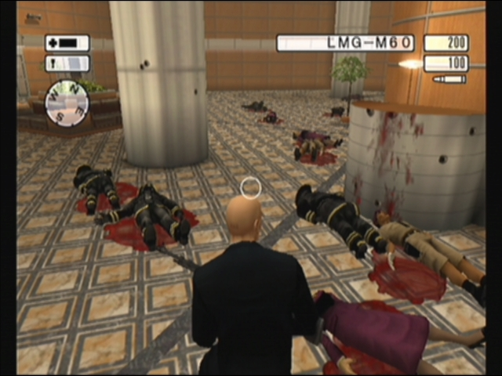

เราจะเริ่มทำการนับถอยหลัง
10-
9
8
7
..
..
6
5
4
3
2
1
Go ไปดูกันเลย
อันดับ 10 Hitman: Blood Money (โล้นซ่าเชือดแก๊งโฉด)

Platform: PC 2 XBOX360 PC
HITMAN มีหลายภาค โดยที่ทุกภาคเราจะได้รับบทเป็น Agent 47 ซึ่งเป็นนักฆ่ารับจ้างด้วยเงิน โดย47 นั้นถือกำเนิดจาก DNA จากนักฆ่าเก่งๆหลายคนรวมกัน

เกมส์นี้ เคยถูกอัยการสหรัฐประกาศรายชื่อ 10 เกมโหดประจำปีที่พ่อแม่ควรหลีกเลี่ยงซื้อให้ลูกเล่นคริสต์มาสมาแล้ว เนื่องจากสาเหตุเพราะเป็นเกมส์ที่สอนฆ่าคน ในเกมก็ตามที่เขาว่าแหละ มีทั้งการใส่ยาพิษ โดยการวางแผนวางระเบิด รัดคอ ฆ่าทั้งคนแก่ คนชรา โดยถ้าวิธีฆ่าที่สมบูรณ์แบบมากคะแนนจะเยอะตามมา
อันดับ 9 Dead Rising (นรกในห้าง)

Publisher: Capcom
Platform: Xbox360
ในเกมส์ผู้เล่นรับบทเป็น Frank West ตากล้องสมัครเล่น ที่หวังจะทำข่าวเด็ดๆ เพื่อตัวเองจะได้มีชื่อเสียงได้ติดตามข่าวประหลาดจนหลงเข้าไปในเมืองที่เต็มไปด้วยซอมบี้

ยังอยากมีชีวิตรอด เขาหนีฝูงซอมบี้เข้าไปใน Willamette Parkview Mall ห้างสรรพสินค้าหลักของเมืองเพื่อที่จะได้ขอความช่วยเหลือจากผู้คน แต่เขาก็ต้องแทบสิ้นหวังเมื่อในห้างเองก็เต็มไปด้วยผู้คนซึ่งได้กลายเป็นซอมบี้เกือบหมด แล้วเช่นกัน เขาจึงจำเป็นที่จะต้องสู้กับเหล่าซอมบี้และหาทางออกไปจากเมืองนี้ให้ได้
ส่วนระบบการต่อสู้เป็นอีกระบบเด่นของเกม เพราะผู้เล่นสามารถหยิบจับสิ่งของเกือบทุกชิ้นรอบๆ ตัวขึ้นมาใช้เป็นอาวุธได้ซึ่งสะใจขาโรคจิตมาก ไม่ว่าจะเป็นปืน มีด กระทะร้อนๆ ที่เจาะสว่าง บดด้วยเครื่องตัดหญ้า ปลาตัวเบิ้ม หรือจะสวมวิญญาณทหารญี่ปุ่นใช้ดาบซามูไรฟันหัวฉับก็ได้ หรือจะกินอาหาร เปลี่ยนเสื้อผ้า เป็นตุ๊ดแต๋วก็ตามใจชอบ ทำอะไรแปลกๆ ได้นับร้อยอย่าง จนติดเรตไม่ยาก